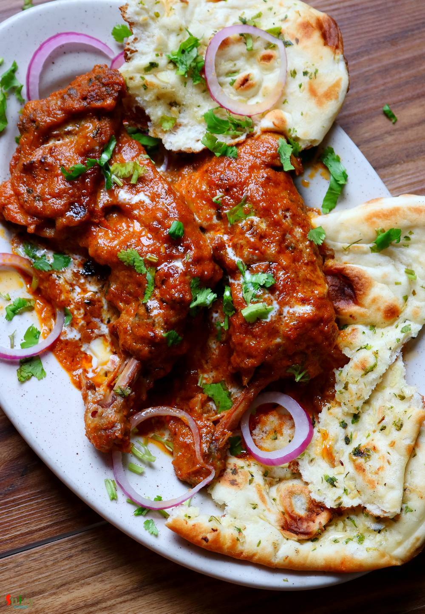

Simple and Easy Recipes
Dhaba style Butter Chicken / Murg Makhni
© 2016 Spicy World, Published on: Jul 17, 2019
As you know Dhaba means road side food joints. Their ambiance and kitchen are not very sophisticated rather more simple and rustic. Dhaba style Butter chicken has spicy, rich, colorful gravy with generous amount of butter and their chicken pieces has very smokey flavor. Overall I love this version of Butter Chicken with some Garlic naan or Jeera rice. Do give this recipe a try and let me know how it turned out for you.

Ingredients
- 500 grams of chicken.
- 3 Tablespoons of yogurt.
- 2 Tablespoons of ginger garlic paste.
- 3 Teaspoons of red chili powder.
- 1 Teaspoon of turmeric powder.
- 2 Tablespoons of tandoori masala.
- 3 Teaspoons of dry fenugreek leaves.
- Salt as per your taste and 3-4 Tablespoons of condensed milk.
- 1 onion, roughly chopped.
- 2 inches of ginger, chopped.
- 6 cloves of garlic, chopped.
- 1 and half tomatoes, chopped.
- 8 cashews or almonds (soaked in water).
- 1 Teaspoon of kashmiri chili powder.
- 1 Teaspoon each of roasted cumin and coriander powder.
- 1 Teaspoon of garam masala powder.
- 1/4th cup of heavy cream.
- 3 Tablespoons of butter.
- 1/4th cup of oil.
- Some chopped coriander leaves.
- Half cup of hot water.


Steps
Marinate the chicken with ginger garlic paste, yogurt, 1 Teaspoon of red chili powder, turmeric powder, tandoori masala powder, some salt and 1 Teaspoon of dry fenugreek leaves or kasuri methi.
Massage the masala very well all over the chicken and keep aside for 3-4 hours.
Heat 2 Tablespoons of oil in a pan.
Fry the chicken for 7-10 minutes on high flame then take them out from pan.
You can also grill the chicken in preheated oven for 20 minutes on highest temperature.
Heat 2 Tablespoons of oil in a pan.
Fry the onion for 5 minutes.
Then add chopped ginger and garlic, cook for 3-4 minutes.
Next add chopped tomatoes and nuts. Cook for 5 minutes.
Then make a smooth paste out of the onion tomato mixture with little water.
Heat the remaining oil and 2 Tablespoons of butter in the same pan.
Keep the flame on very low, add kashmiri chili powder, roasted cumin coriander powder and the remaining chili powder. Cook for 1 minute.
Then add the onion tomato paste. Cook for 10 minutes.
Next add salt and condensed milk. Mix well for 2-3 minutes. You can add sugar instead of condensed milk.
Then add the cooked chicken, mix well for 2 minutes.
Add hot water, cover the pan and cook until the chicken becomes soft and the gravy becomes thick.
Lastly add garam masala powder, the remaining dry fenugreek leaves and the heavy cream. Mix well and cook for another 5 minutes on low flame, then turn off the heat.
While serving the chicken add some butter, cream and chopped coriander leaves on top.
Your dhaba style butter chicken is ready to serve.
Serve this hot with naan or pulao ..
")